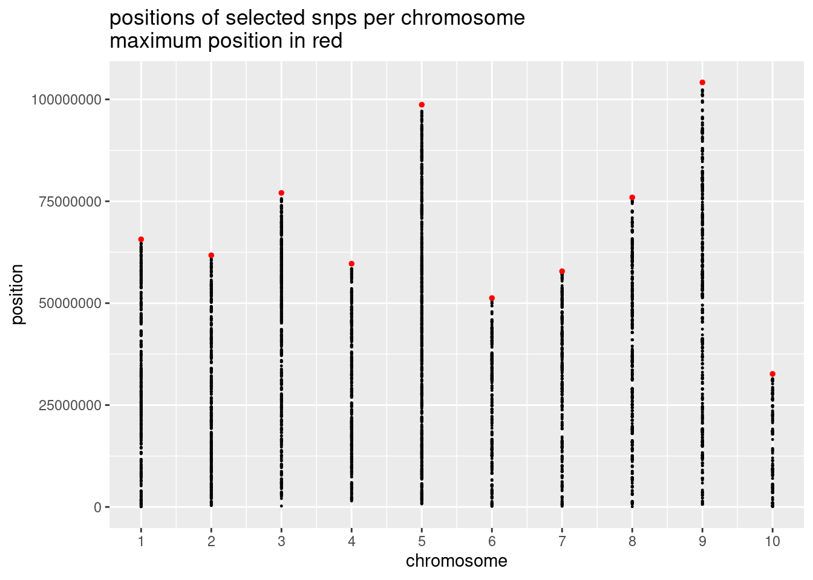
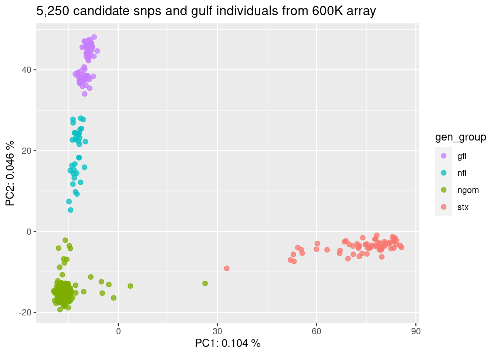

6 Summary Plots of SNPs for Panel
6.1 Distribution of SNPs
panel_snps <- readRDS(file = here::here("data","derived","panel_snps"))
as_tibble(panel_snps)## # A tibble: 5,250 × 4
## snp_id chrom pos maf
## <chr> <dbl> <dbl> <dbl>
## 1 AX562728433 1 59205245 0.238
## 2 AX562729930 1 60046917 0.247
## 3 AX562733277 1 61521865 0.272
## 4 AX562733495 1 61742861 0.313
## 5 AX562733961 1 20277463 0.160
## 6 AX562735439 1 62906370 0.186
## 7 AX562736320 1 63385209 0.218
## 8 AX562738101 1 63903571 0.212
## 9 AX562738713 1 64464304 0.272
## 10 AX562738980 1 64615172 0.411
## # ℹ 5,240 more rowsggplot(panel_snps, aes(x = chrom, y = pos)) +
geom_point(size = 0.2)
Add in the maximum position for each chromosome (in red)
chrom_info <- readRDS(file = here("data","derived","chrom_info"))
p1<-ggplot(panel_snps, aes(x = chrom, y = pos)) +
geom_point(size = 0.2) +
geom_point(data = chrom_info, color = "red", size = 1) +
xlab("chromosome") +
ylab("position") +
scale_x_continuous(breaks=1:10) +
ggtitle("positions of selected snps per chromosome\nmaximum position in red")
p1
ggsave(here::here("figures_and_tables","01_snps_along_genome.png"), p1, width = 8, height = 6, units = "in")6.2 MAF per population
Examine the distribution of MAF of SNPs for each population
First fetch the data
nfl_frq <- readRDS(file = here::here("data","derived","nfl_frq")) %>%
rename(snp_id = nfl_probe) %>%
filter(snp_id %in% panel_snps$snp_id) %>%
remove_rownames()
gfl_frq <- readRDS(file = here::here("data","derived","gfl_frq")) %>%
rename(snp_id = gfl_probe) %>%
filter(snp_id %in% panel_snps$snp_id) %>%
remove_rownames()
ngom_frq <- readRDS(file = here::here("data","derived","ngom_frq")) %>%
rename(snp_id = ngom_probe) %>%
filter(snp_id %in% panel_snps$snp_id) %>%
remove_rownames()
stx_frq <- readRDS(file = here::here("data","derived","stx_frq")) %>%
rename(snp_id = stx_probe) %>%
filter(snp_id %in% panel_snps$snp_id) %>%
remove_rownames()Format the data
maf <- nfl_frq %>%
left_join(.,gfl_frq,by="snp_id") %>%
left_join(.,ngom_frq,by="snp_id") %>%
left_join(.,stx_frq,by="snp_id") %>%
select(snp_id,everything())Need to format data to “long” format
maf_long <- maf %>%
rename(stx = stx_frq, ngom = ngom_frq, nfl = nfl_frq, gfl = gfl_frq) %>%
pivot_longer(!snp_id, names_to = "pop", values_to = "maf") Plot maf data
p2<-ggplot(maf_long, aes(x=pop, y=maf)) +
geom_boxplot(width=0.5)+
xlab("genetic group") +
ylab("minor allele frequency") +
ggtitle("minor allele frequency of selected snps per genetic group")
p2
ggsave(here::here("figures_and_tables","02_maf_genetic_groups.png"), p2, width = 8, height = 4, units = "in")6.3 PCA with selected SNPs
Read in sample data
sample_data <-readRDS(here("data","derived","sample_data"))Read in genotype data (genotypes for each individual at each loci), filter so only includes loci on panel
genotypes <- readRDS(here("data","derived","genotypes_f_he_hw"))
genotypes_with_panel_snps <- genotypes[, maf$snp_id]Turn data into a genind object
gind <- df2genind(genotypes_with_panel_snps, ncode = 1, sep = "", NA.char = NA, ploidy = 2)
gind## /// GENIND OBJECT /////////
##
## // 380 individuals; 5,250 loci; 10,500 alleles; size: 18 Mb
##
## // Basic content
## @tab: 380 x 10500 matrix of allele counts
## @loc.n.all: number of alleles per locus (range: 2-2)
## @loc.fac: locus factor for the 10500 columns of @tab
## @all.names: list of allele names for each locus
## @ploidy: ploidy of each individual (range: 2-2)
## @type: codom
## @call: df2genind(X = genotypes_with_panel_snps, sep = "", ncode = 1,
## NA.char = NA, ploidy = 2)
##
## // Optional content
## - empty -Run a PCA
x1 <- scaleGen(gind, NA.method = "mean")
pca1 <- dudi.pca(x1,cent=FALSE,scale=FALSE,scannf=FALSE,nf=4)
eig1<-barplot(pca1$eig[1:10],main="PCA eigenvalues", col=heat.colors(50))PC_ind <- PC.ind(pca1)
eig <- eigenvalues(pca1)
#rename "Sample_ID" in PC_ind to "INDV"
PC_ind <- PC_ind %>% rename(Sample=Sample_ID)
PC_ind <- merge(PC_ind,sample_data,by = "Sample")
pc <- ggplot(PC_ind, aes(x = Axis1, y = Axis2, color = gen_group)) +
geom_point(alpha = 0.75, size = 2) +
labs(x = paste("PC1:", round(eig[1, 3], digits = 3), "%"),
y = paste("PC2:", round(eig[2, 3], digits = 3), "%"))+
ggtitle("5,250 candidate snps and gulf individuals from 600K array") +
scale_color_hue(direction = -1)
pc
ggsave(here::here("figures_and_tables","03_pca_gulf_from_600K_array.png"), pc, width = 8, height = 6, units = "in")